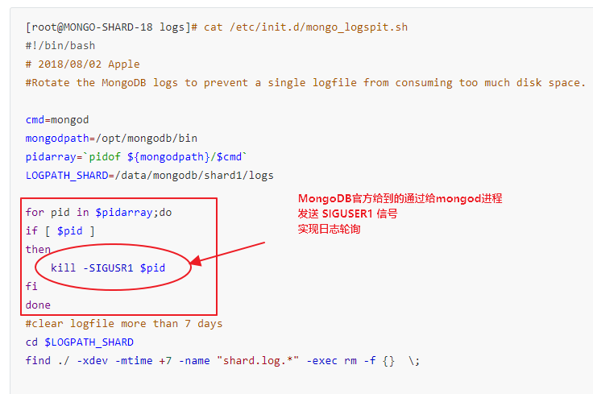

[root@sh_01 ~]# mongo MongoDB shell version: 3.2.16 connecting to: test > db.auth('test_dev','uplooking') 1 > db.t1.find() { "_id" : ObjectId("5b5ebb6796b8b74a73ee30f6"), "a" : 1, "b" : 2 } { "_id" : ObjectId("5b5ebb6996b8b74a73ee30f7"), "a" : 1, "b" : 1 } > for (i=1;i<200000;i++){ ... db.t1.insert({id:i})} WriteResult({ "nInserted" : 1 })
[root@sh_01 ~]# cd /alidata/mongodb/logs [root@sh_01 log]# ll -rw-r--r-- 1 root root 2182 Aug 3 10:28 mongod27017.log -rw-r--r-- 1 root root 3100 Aug 2 14:19 mongod27017.log.2018-08-02T07-18-27 -rw-r--r-- 1 root root 1526 Aug 2 15:18 mongod27017.log.2018-08-02T07-18-54 [root@sh_01 log]# file * mongod27017.log: ASCII text, with very long lines mongod27017.log.2018-08-02T07-18-27: ASCII text, with very long lines mongod27017.log.2018-08-02T07-18-54: ASCII text, with very long lines
[root@sh_01 log]# echo > mongod27017.log [root@sh_01 log]# echo > mongod27017.log [root@sh_01 log]# ll total 12 -rw-r--r-- 1 root root 1 Aug 3 10:29 mongod27017.log -rw-r--r-- 1 root root 3100 Aug 2 14:19 mongod27017.log.2018-08-02T07-18-27 -rw-r--r-- 1 root root 1526 Aug 2 15:18 mongod27017.log.2018-08-02T07-18-54 [root@sh_01 log]# file * mongod27017.log: very short file (no magic) mongod27017.log.2018-08-02T07-18-27: ASCII text, with very long lines mongod27017.log.2018-08-02T07-18-54: ASCII text, with very long lines
[root@sh_01 log]# tail -f mongod27017.log
2018-08-03T10:30:21.936+0800 I NETWORK [initandlisten] connection accepted from 127.0.0.1:43720 #2 (2 connections now open)
[root@sh_01 log]# ll -h total 12K -rw-r--r-- 1 root root 2.8K Aug 3 10:30 mongod27017.log -rw-r--r-- 1 root root 3.1K Aug 2 14:19 mongod27017.log.2018-08-02T07-18-27 -rw-r--r-- 1 root root 1.5K Aug 2 15:18 mongod27017.log.2018-08-02T07-18-54 [root@sh_01 log]# file * mongod27017.log: PCX ver. 2.5 image data mongod27017.log.2018-08-02T07-18-27: ASCII text, with very long lines mongod27017.log.2018-08-02T07-18-54: ASCII text, with very long lines # 一边不断产生日志，一边多次执行echo> [root@sh_01 log]# echo > mongod27017.log [root@sh_01 log]# echo > mongod27017.log [root@sh_01 log]# file * mongod27017.log: PCX ver. 2.5 image data mongod27017.log.2018-08-02T07-18-27: ASCII text, with very long lines mongod27017.log.2018-08-02T07-18-54: ASCII text, with very long lines mongod27017.log.2018-08-03T03-09-08: PCX ver. 2.5 image data [root@sh_01 log]# echo > mongod27017.log [root@sh_01 log]# file * mongod27017.log: very short file (no magic) mongod27017.log.2018-08-02T07-18-27: ASCII text, with very long lines mongod27017.log.2018-08-02T07-18-54: ASCII text, with very long lines mongod27017.log.2018-08-03T03-09-08: PCX ver. 2.5 image data [root@sh_01 log]# ll -h total 16K -rw-r--r-- 1 root root 1 Aug 3 11:28 mongod27017.log -rw-r--r-- 1 root root 3.1K Aug 2 14:19 mongod27017.log.2018-08-02T07-18-27 -rw-r--r-- 1 root root 1.5K Aug 2 15:18 mongod27017.log.2018-08-02T07-18-54 -rw-r--r-- 1 root root 2.9K Aug 3 11:05 mongod27017.log.2018-08-03T03-09-08 [root@sh_01 log]# file * mongod27017.log: very short file (no magic) mongod27017.log.2018-08-02T07-18-27: ASCII text, with very long lines mongod27017.log.2018-08-02T07-18-54: ASCII text, with very long lines mongod27017.log.2018-08-03T03-09-08: PCX ver. 2.5 image data [root@sh_01 log]# file * mongod27017.log: PCX ver. 2.5 image data mongod27017.log.2018-08-02T07-18-27: ASCII text, with very long lines mongod27017.log.2018-08-02T07-18-54: ASCII text, with very long lines mongod27017.log.2018-08-03T03-09-08: PCX ver. 2.5 image data [root@sh_01 log]# hexdump -c mongod27017.log 0000000 \n \0 \0 \0 \0 \0 \0 \0 \0 \0 \0 \0 \0 \0 \0 \0 0000010 \0 \0 \0 \0 \0 \0 \0 \0 \0 \0 \0 \0 \0 \0 \0 \0 * 0000850 \0 \0 \0 \0 \0 \0 \0 2 0 1 8 - 0 8 - 0 0000860 3 T 1 1 : 2 9 : 0 6 . 7 2 9 + 0 0000870 8 0 0 I A C C E S S [ 0000880 c o n n 3 ] U n a u t h o r i 0000890 z e d : n o t a u t h o r i 00008a0 z e d o n t e s t t o e 00008b0 x e c u t e c o m m a n d { 00008c0 f i n d : " t 1 " , f i l 00008d0 t e r : { } } \n
[root@sh_01 log]# pidof mongod 1828 [root@sh_01 log]# kill -SIGUSER1 1828 -bash: kill: SIGUSER1: invalid signal specification [root@sh_01 log]# kill -SIGUSR1 1828 [root@sh_01 log]# ll total 16 -rw-r--r-- 1 root root 1526 Aug 3 11:09 mongod27017.log -rw-r--r-- 1 root root 3100 Aug 2 14:19 mongod27017.log.2018-08-02T07-18-27 -rw-r--r-- 1 root root 1526 Aug 2 15:18 mongod27017.log.2018-08-02T07-18-54 -rw-r--r-- 1 root root 2942 Aug 3 11:05 mongod27017.log.2018-08-03T03-09-08 [root@sh_01 log]# file * mongod27017.log: ASCII text, with very long lines mongod27017.log.2018-08-02T07-18-27: ASCII text, with very long lines mongod27017.log.2018-08-02T07-18-54: ASCII text, with very long lines mongod27017.log.2018-08-03T03-09-08: PCX ver. 2.5 image data
生产环境

修改日志轮询脚本：
[root@MONGO-SHARD-18 logs]# cat /etc/init.d/mongo_logspit.sh #!/bin/bash # 2018/08/02 Apple #Rotate the MongoDB logs to prevent a single logfile from consuming too much disk space.
for pid in $pidarray;do if [ $pid ] then kill -SIGUSR1 $pid fi done #clear logfile more than 7 days cd $LOGPATH_SHARD find ./ -xdev -mtime +7 -name "shard.log.*" -exec rm -f {} \;
最后是正常的字符串记录着mongodb的日志信息，类似于2018-08-03T10:30:21.936+0800 I NETWORK [initandlisten] connection accepted from 127.0.0.1:43720 #2 (2 connections now open)由日志和日志明细组成
因此修复的思路如下：
23G的日志，首先按照大小6G做切分split -b 6G log，切分成4个文件
查看切分后的日志格式，如果最后一个日志为ASCII text则不再切分否则，将最后一个日志继续切分
循环上一步，直到最后一个文件切分出来没有ASCII text为止
操作明细
日志轮询的部署距离现在大概4个月
第一次将23G的文件以6G切分成4个文件：xaa\xab\xac\xad，查看4个文件的属性为
xaa: PCX ver. 2.5 image data xab: PCX ver. 2.5 image data xac: PCX ver. 2.5 image data xad: PCX ver. 2.5 image data
重命名xad为x1第二次切分x1 5G，按照1G切分成5份，查看文件属性
xaa: PCX ver. 2.5 image data xab: PCX ver. 2.5 image data xac: PCX ver. 2.5 image data xad: PCX ver. 2.5 image data xae: ASCII text, with very long lines
重名xad 为 x2 按照15M的大小切分，查看文件的属性如下
xaa: PCX ver. 2.5 image data 此处省略。。。 xdo: PCX ver. 2.5 image data xdp: ASCII text, with very long lines xdq: ASCII text, with very long lines xdr: ASCII text, with very long lines xds: ASCII text, with very long lines xdt: ASCII text, with very long lines xdu: ASCII text, with very long lines xdv: UTF-8 Unicode text, with very long lines xdw: ASCII text, with very long lines xdx: ASCII text, with very long lines xdy: ASCII text, with very long lines
切分后文件类型为ASCII text的文件中找到15点~16点的文档
[root@sh_01 mongolog_20180801]# head -n 2 xdv re: "x86_64", version: "Kernel 3.10.0-693.2.2.el7.x86_64" } } 2018-08-01T16:13:44.958+0800 I ACCESS [conn4972925] Successfully authenticated as principal __system on local [root@sh_01 mongolog_20180801]# head -n 2 xdu 38422 #4967772 (445 connections now open) 2018-08-01T14:00:10.575+0800 I NETWORK [thread1] connection accepted from 172.16.0.44:38430 #4967773 (446 connections now open)